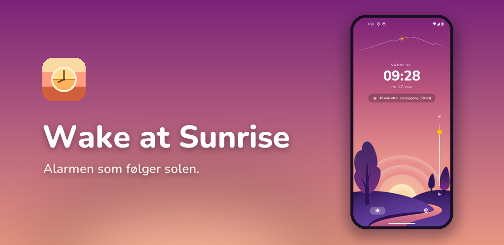
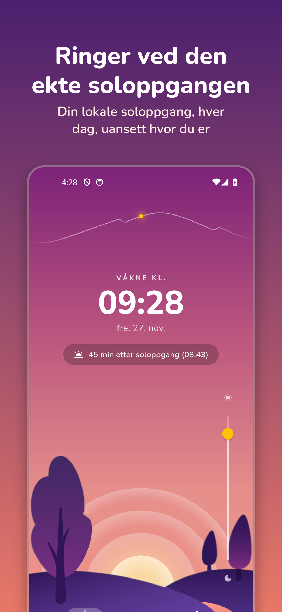
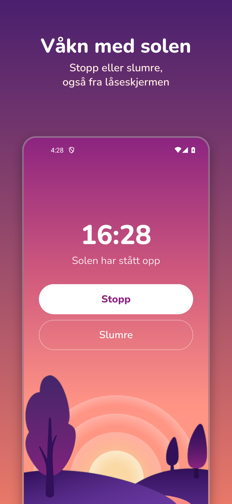
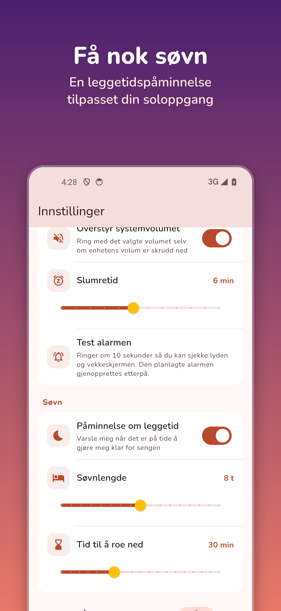

Pressemappe
Oppdatert 18. november 2026 ·
Wake at Sunrise er en vekkerklokke for Android som ringer ved den ekte soloppgangen der du er – beregnet på telefonen – og flytter seg med den et minutt eller to om dagen gjennom årstidene og på tvers av tidssoner. Brukerne velger å våkne ved soloppgang eller et hvilket som helst antall minutter før eller etter. Appen er gratis, med et valgfritt Premium for myke vekkelyder og påminnelser om leggetid; det finnes ingen konto og ingen reklame, og posisjonen forlater aldri enheten. Den er laget av en uavhengig utvikler.
| Navn | Wake at Sunrise |
|---|---|
| Utvikler | Uavhengig utvikler |
| Plattform | Android 7.0 og nyere · iOS under utvikling |
| Lansert | 16. november 2026, på Google Play |
| Pris | Gratis · valgfritt Premium, årlig eller som engangskjøp for livstid |
| Språk | Engelsk, portugisisk (Brasil), tysk, svensk, norsk, dansk, finsk, nederlandsk, spansk, russisk |
| Personvern | Ingen konto, ingen reklame, ingen sporing; soloppgangen beregnes på enheten |
Tilgjengelig påGoogle Play
Kommer snart tilApp Store
Bilder









Lenker
Kontakt
For intervjuer, anmelderkoder eller noe annet, skriv til utviklerens e-postadresse.